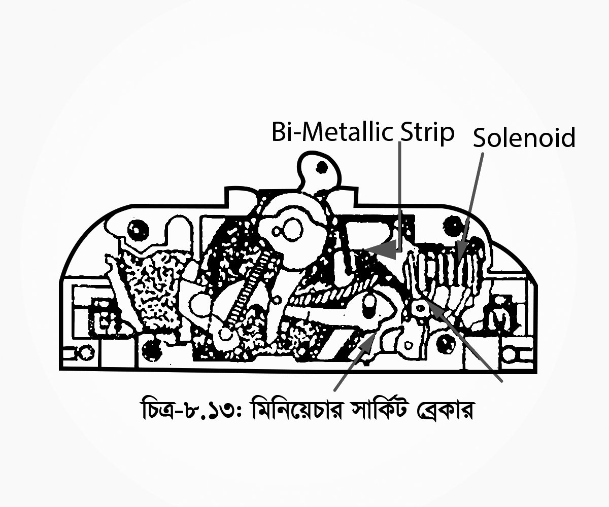

<div class="content">
    <div class="scroller">
        <p class="page-no">156</p><br><br>
        <h2></h2>
        <p class="c-align">
            
        </p>

        <p class="c-align">চিত্র-৮.১৩: মিনিয়েচার সার্কিট ব্রেকার
            <span class="tooltip_my">
                <i class="fa fa-play-circle video-class" videosrc="videos/156/156-animn-172.mp4" style="font-size: 20px;" aria-hidden="true"></i>
                <span class="tooltiptext">click here to see the video</span>
            </span>
        </p>

        <p>
            <b>গঠন: </b>চিত্রে একটি মিনিয়েচার সার্কিট ব্রেকার দেখানো হয়েছে, যাতে একটি কয়েল জড়ানো এবং এটি বাই-মেটালিক স্ট্রিপ (দুটি ভিন্ন ধাতুর পাত্র একত্রে জোড়া লাগানো) দিয়ে গঠিত থার্মাল ম্যাগনেটিক প্রটেক্টিভ ইউনিট থাকে। যখন ব্রেকারের মধ্য দিয়ে স্বাভাবিকের (পূর্ব নির্ধারিত) চেয়ে বেশি কারেন্ট প্রবাহিত হয়, তখন বাই-মেটালিক স্ট্রিপটি উত্তপ্ত হয়ে বেঁকে যায় ফলে ব্রেকার খুলে যায় এবং সার্কিটটি রক্ষা পায়।
        </p>
        <p>
            <b>ব্রেকারের অপারেশন ঃ</b> তাপমাত্রা, কারেন্ট প্রবাহের পরিমাণ এবং সময়ের উপর এর অপারেশন নির্ভর করে। তাই শর্ট সার্কিটের বেলায় বাই-মেটালিক স্ট্রিপটি দ্রুত উত্তপ্ত হতে পারে না, ফলে বাঁকা হতে পারে না। কিন্তু সে মুহূর্তে সলিনয়েডের কয়েল দিয়ে কারেন্ট প্রবাহিত হওয়ার ফলে একটি শক্তিশালী চৌম্বকক্ষেত্রের সৃষ্টি হয় এবং আকর্ষন করে। প্লানজারটি ট্রিপ লিভার (Trip Lever)-কে টেনে নেয়, ফলে ব্রেকার খুলে যায় এবং সার্কিটটি রক্ষা পায়।
        </p>

        <div>
            <h4 class="topic-title-no">৮.১০</h4>
            <h4 class="topic-title">অটোমেটিক রিক্লোজার বা অটো-রিক্লোজার</h4>
            <h4 class="topic-title">(Describe the Principle of Operation of an Automatic Reclosure (Auto-Reclosure))</h4>
            <p>
                বর্তমান বিশ্বে বিদ্যুৎশক্তি ব্যবহার বৃদ্ধির সাথে সাথে আন্তঃসংযোগ (Network Inter Connection) ব্যবস্থার প্রসার ঘটেছে। প্রায় সকল দেশে বিদ্যুৎ সরবরাহ ব্যবস্থা গ্রিড সিস্টেমের অন্তর্ভুক্ত করা হয়েছে। আন্তঃসংযোগ ব্যবস্থার কোন ত্রুটি দেখা দিলে দুই প্রান্তের সার্কিট ব্রেকার টিপ করে এবং ত্রুটিমুক্ত না হওয়া পর্যন্ত সংযোগ বিচ্ছিন্ন অবস্থায় থাকে, যা নিরবচ্ছিন্ন সরবরাহের ক্ষেত্রে কাম্য নয়। বিদ্যুৎ সরবরাহ ও বিতরণ ব্যবস্থার ওভারহেড লাইনে অধিকাংশ ত্রুটি ট্রানজিয়েন্ট (ক্ষনস্থায়ী) প্রকৃতির। সমীক্ষায় দেখা গেছে প্রায় 90% ত্রæটি যেমন- বজ্রপাত, পাখি, গাছের শাখা-প্রশাখা ইত্যাদি সাময়িকভাবে লাইনে পতনের ফলে সংঘোটিত ত্রুটি কয়েক মুহূর্ত পরে অর্থাৎ খুব তাড়াতাড়ি আপনা-আপনি সেরে যায়। এক্ষেত্রে সাধারণ সার্কিট ব্রেকার ত্রুটি দেখা দেওয়া মাত্র ট্রিপ করে যায় এবং পরবর্তীতে আপনা-আপনি ত্রুটিমুক্ত হলেও সার্কিট ব্রেকার কিন্তু  স্বয়ংক্রিয়ভাবে পুনঃসংযোগ স্থাপন করে না। বরং পুনঃসংযোগের জন্য অপারেটর হস্তক্ষেপের প্রয়োজন হয়।
            </p>
            <p>কাজেই উল্লিখিত অসুবিধা দূরীকরণের নিমিত্তে এবং নিরবচ্ছিন্ন সরবরাহ ব্যবস্থার নিশ্চয়তা বিধান লক্ষ্যে অটো রিক্লোজার ব্যবহার করা হয়। </p>
            <p>
                <b>অটো রিক্লোজার কার্যনীতি:</b>
                <br>অটো রিক্লোজার মূলত একটি সার্কিট ব্রেকার, যাতে নির্দিষ্ট সময় অন্তর অন্তর নির্দিষ্ট অটো রিক্লোজিং এর ব্যবস্থা রয়েছে।
                <br>লাইনে কোন ত্রুটি দেখা দিলে এটি কিছু সময়ের ব্যবধানে (সাধারণত 0.3 সেকেন্ড) লাইনকে বিচ্ছিন্ন ও পুনঃ সংযোগ করে থাকে। পর পর তিনবার এ প্রচেষ্টা চালানোর পর ত্রুটিমুক্ত না হলে এটি লাইনকে পুনঃ সংযোগ করে না তখন ধরে নেয়া হয় যে, কোনো বড় ধরনের স্থায়ী ত্রুটি সংঘটিত হয়েছে।

            </p>
        </div>
    </div>
</div>
